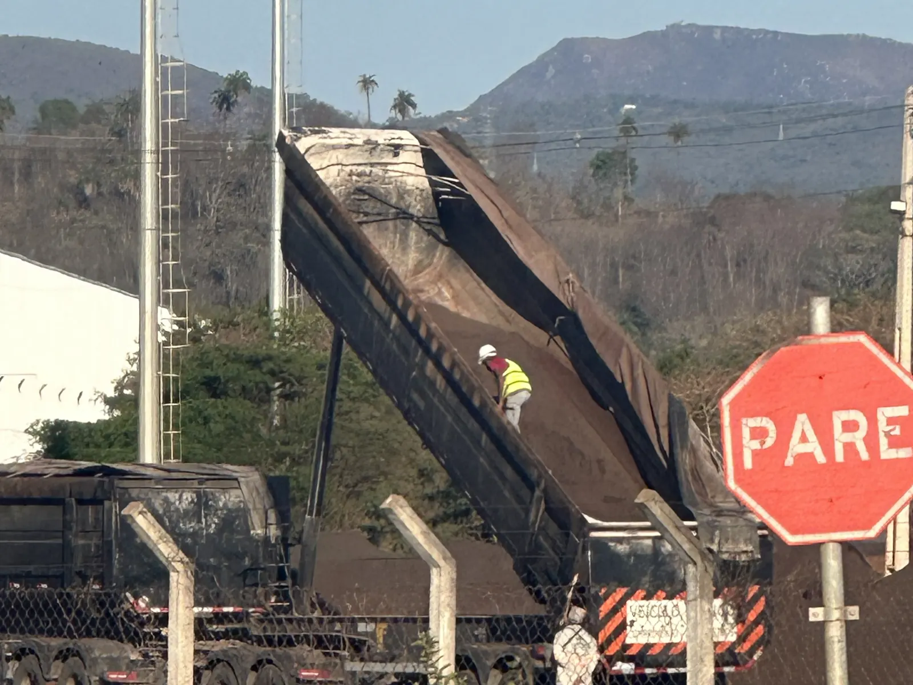

Iron ore and steelThe pen on the glass
- Situation
- An iron ore terminal designed for single-trailer trucks started receiving B-doubles and road trains. The queue spilled onto the public road, the client was pressing, and everyone had the same diagnosis: not enough staff.
- What I did
- I spent an hour standing at a single point of the operation, just watching. Each operator owned a truck, not a step. I redrew the roles by step on the glass wall of the meeting room, with the shift leader, and the drawing became the standard.
- Result
- Close to 50% more unloading capacity, with the same team and no investment.